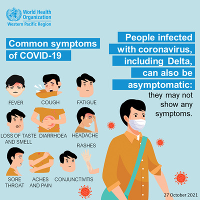
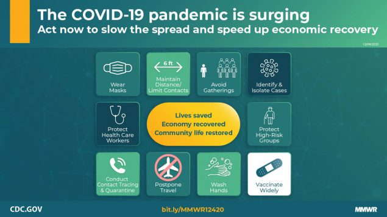

In December 2019, Wuhan got struck with a series of strains from a new pandemic known as COVID-19. But No one truly relaised the Deadly Virus' power and impact on the world. 2020 came around and there became more news on the pandemic. The Virus was Originated in bats and human transmission in close contact. The World Health Organisation finally declared the term COVID-19(Shortened frokm Coronavirus Disease 19) as a Global Pandemic on March 11th 2020. This Virus is highly cotangious and can be transferred through close contact with infected people. Just when people thought it couldn't get any worse the Restrictions changed dramatically. They enforced people to isolate at home if they had symptoms of COVID-19 whatsoever and schools have been cancelled due to stop the spread of COVID-19 incase people have it. Thus that year Zoom and or Skype took off that year with the enforcements of Online meetings.
Symptoms Include
- Fever or chills - Shortness of Breath and or difficult breathing - Muscle or Body Aches - Fatigue (You can't move and You're very tired) - Headache - Loss of Taste of Smell - Sore throat - Runny nose or Congestion(Stuffed Nose) - Nausea and or vomiting |

|
Protective Strategies during a global pandemic is key if you want to be safe. Here are 5 that I thought are the main protective Strategies used during the time of the Pandemic of COVID-19. This helps by not breathing in COVID-19 bacteria in the air and stop the spread of the virus.
Using MasksMasks are one of the more common protective Strategiest that you would've probably had to use if you lived in 2020. These were a big part of COVID-19 Protective Strategies and you might have some masks around your house. |
Social DistancingTo Stop the spead of COVID-19 the government enforced 1.5m of Social Distancing as COVID-19 is highly contagious with close contact with the infected. This helps by minimising the chance of being in close contact with an infected person if they are not staying home even with the symptoms. |
Hand Sanitiser/Hand WashingHand Sanitiser is basically portable soap but you also don't need water. This is very handy to have if you have touched something that a infected person have touched thus implying more so that this virus was a highly contagious speciemen. But nothing beats hand washing. Hand Washing get all bacteria off your hands and helps your immune system to any disease including COVID. This helps by minimising the chance for the COVID disease to go through your hand and go to your body and giving you a disease. Instead the bacteria can be washed away with the use of soap and water. |
VaccinationsIn the late period of COVID-19 Pfizer and Moderna have produced COVID-19 vaccines that have been endorsed by the Government. People should use Vaccines to minimise their chance of getting Covid-19. |
RAT/COVID TestsRAT (Rapid Antigen Test) are tests that test you for COVID through mucus. There is also a PCR test which usually done at a COVID testing Clinic compared to the more portable but less reliable RAT. Both the PCR tests and RAT are both great protective Strategies to minimise the chances of affecting other people. This might not be a protective strategy for yourself but it's protecting others around you from getting it if you by chance have it. |
Things that Negatively impacted the way people support their physical health is Isolation, Social Distancing and Masks. Isolation prevents anyone from leaving their house with COVID-19 symptoms thus the uprise of cardio indoors like weights and simple excercises. This means that you can't go to a gym or see a trainer to help your physical health. Social Distancing also impacted the way we get excercise and Social Distancing is another impact on people going to gyms or sseeing personal or group trainers. Social Distnacing is a good protective strategy but can impact people's physical and sometimes mental health. Masks are another reason why they impacted people's mental and physical health as you can not breathe in them properly from my experience and wearing that all the time is quite annoying. But trying to run or do excercise outside with it on is the same as running with a plastic bag on your head; You Will suffocate. This impacted people's breathing and overall didn't make COVID a fun period of time for anyone.
|

|
Negative Impacts On Physical Health During COVID-19During Covid no one really knew the destruction of what Covid-19 could really do to some people's health. The First and one of the major impacts of Covid-19 was social isolation. People by nature are social and we need to be surrounded by other people to contribute positively to our mental health. Next major impact was on people’s physical health. Covid gives people flu like symptoms such as Coughs, colds and loss of smell and taste, some people struggle to get over Covid which is what Scientists believe is called long Covid consiting of lethergy and loss of apetite. People who suffer from asthma and contract Covid can struggle with breathing and may need a ventilator to breathe properly. Then there are the rare few who contract heart arrhythmia and small blood clots near the heart and people with underlying health conditions and or the elderly can die from Covid. |
|
First Image: World Health Organisation |
Second Image: Centers For Disease Control and Prevention |
Information: AJMC